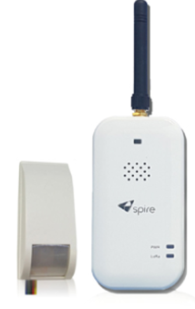
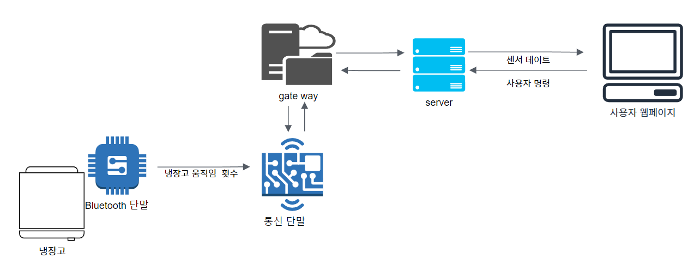

부산 홀몸 어르신 단말
1. 제품 이미지

2. 주요 기능
LoRa 통신 방식으로 부산시에 거주하는 홀몸 어르신이 자택에 정상적으로 머무르는지 확인하는 단말.
IR 센서로 움직임 감지데이터와 냉장고에 붙어 있는 자이로센서로부터 오는 블루투스 신호를 카운트하여 서버로 전송
3. 아키텍처 다이어그램

4. 나의 역할
- 블루투스 데이터 수신 기능
→ 블루투스 데이터의 정확성을 검증, 데이터 저장
- LoRa 통신 기능
5. 결과 및 효과
- 부산시 홀몸 어르신 단말을 활용해 실시간 모니터링 진행